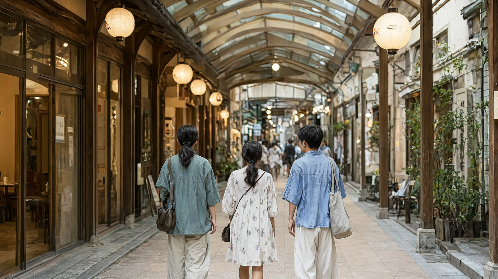

도고온천에 묵으며 하루 2곳만 도는 가족용 3박 4일 일정
마쓰야마 3박 4일 느린 가족 일정: 도고온천 숙박, 성과 동물원
성인 2명과 초등학생 1명이 도고온천 마을에 3박 하면서 하루에 두 곳만 도는 일정입니다. 인천 직항 동계 시간표(2026년 10월 25일부터)의 오전 도착편(08:35 도착)과 귀국 오후편(15:40 출발)을 기준으로 짰습니다 (마쓰야마공항 국제선 진흥협의회). 가족이 지치지 않도록 매일 오후에 숙소에서 쉬는 시간을 넣었습니다.
일정 한눈에 보기
| 일차 | 방문지 (2곳 이내) | 이동 | 예약 필수 | 메모 |
|---|---|---|---|---|
| 1일차 | 도고온천 상점가 산책, 도고온천 본관 가미노유 | 공항에서 리무진 버스로 도고온천역 앞까지 약 40분 | 숙소 | 08:35 도착 후 입국 심사를 마치고 09:10 또는 09:20 버스를 탑니다. 체크인 전이면 짐만 맡깁니다. 오후는 휴식 |
| 2일차 | 마쓰야마성 (로프웨이와 천수), 오카이도 상점가 점심 | 시내 전차로 오카이도까지, 성까지 도보 약 5분 | 없음 | 오전에 성, 점심 뒤 일찍 숙소로 돌아와 오후 휴식 |
| 3일차 | 도베 동물원 (또는 도고공원 산책) | 마쓰야마시역에서 이요테쓰 버스 도베 동물원 앞 하차, 또는 택시 | 없음 | 월요일 휴원. 오전에 다녀오고 오후 휴식 |
| 4일차 | 도고온천 본관 아침 입욕 또는 상점가 마지막 산책 | 13:07 도고온천역 앞 출발 버스로 공항 13:45 도착 | 없음 | 15:40 출발편. 오전은 여유롭게 |
각 방문지는 한 곳을 오전에 보고 오후는 쉬는 구조입니다. 이동 시간은 시내 전차가 마쓰야마시역에서 도고온천역까지 약 20분, JR마쓰야마역 앞에서 약 25분(이요테쓰 공식)이라 한 번에 타는 시간이 짧은 편입니다.
1일차 상세: 도착과 도고온천
- 08:35 도착 후 입국 심사와 짐 수령을 마칩니다 (소요 시간은 가정치로 35~45분).
- 이요테쓰 리무진 버스 도고온천역 앞행을 탑니다. 10월 25일~11월 30일 시간표에서 이 시간대에 도고온천역 앞까지 가는 버스는 09:10 출발(도착 09:50)과 09:20 출발(도착 10:00)입니다 (이요테쓰 공식 시간표, 국내선 연계 시각). 서울편 도착에 맞춘 행은 표에 없으므로 자세한 내용은 공항 이동 글을 보세요.
- 숙소에 짐을 맡기고 도고온천 상점가를 걷습니다. 점심은 상점가에서 먹습니다.
- 가미노유 1층 입욕은 어른 700엔, 어린이(2~11세) 350엔이고 예약이 안 됩니다. 대기가 길면 저녁이나 4일차 아침으로 미룹니다 (도고온천 공식 사이트).
2일차 상세: 마쓰야마성
- 시내 전차로 오카이도에서 내려 성까지 도보 약 5분입니다 (마쓰야마시 안내).
- 로프웨이는 8:30~17:30 10분 간격입니다. 리프트는 초등학생부터 탈 수 있지만 비 오는 날은 운휴합니다 (마쓰야마성 공식 안내).
- 성 천수는 9:00~17:00(12~1월은 16:30까지)이고 폐장 30분 전까지 입장합니다. 동운구 역사에서 매표소까지 약 30분이 걸린다고 하니 역사부터 1시간 정도 잡습니다.
- 내린 뒤에는 계단과 비탈이 있으니 유모차는 맞지 않습니다.
3일차 상세: 도베 동물원
- 이요테쓰 버스 도베선(센슈초 경유, 에히메 어린이의 성행)을 마쓰야마시역 3번 승강장에서 타고 도베 동물원 앞에서 내립니다 (도베 동물원 공식 안내). 시각과 요금은 확인 필요입니다. 택시를 쓰면 시내에서 차로 약 20분이라고 안내됩니다.
- 9:00~17:00(입장 16:30까지), 월요일 휴원, 월요일이 공휴일이면 다음 평일 휴원입니다. 일정이 월요일에 걸리면 2일차와 순서를 바꿉니다.
- 동물원은 야외라 비 오는 날은 맞지 않습니다. 그날은 도고공원(유즈키성 터) 산책이나 숙소 휴식으로 바꿉니다. 도고공원의 운영 시간과 요금은 확인 필요입니다.
- 우치코를 가고 싶다면 이 날을 우치코 당일치기로 바꿀 수 있습니다 (허브 글 참고).
오후 휴식 지점
| 일차 | 휴식 장소 | 길이 | 내용 |
|---|---|---|---|
| 1일차 | 도고온천 숙소 | 14:00~17:00 | 시차는 없지만 이른 비행이라 낮잠과 객실 휴식 |
| 2일차 | 도고온천 숙소 | 14:00~17:00 | 오전 성 관광 뒤 휴식, 해 질 무렵 상점가 산책 |
| 3일차 | 숙소 또는 도고온천 족욕 시설 | 14:30~17:00 | 족욕 시설 운영 여부는 확인 필요 |
| 4일차 | 해당없음 | 해당없음 | 오후 15:40 출발이라 공항에서 쉽니다 |
예약이 필요한 시설
| 시설 | 예약 | 비고 |
|---|---|---|
| 숙소 (도고온천 권역) | 필수 | 도고온천 본관은 숙박이 안 되는 입욕 시설이라 숙소를 따로 잡아야 합니다 (도고온천 공식 사이트). 1박 가격은 확인 필요 |
| 도고온천 본관 가미노유 | 불가 | 예약 없이 가고 대기 시간은 공식 사이트에서 확인합니다 |
| 마쓰야마성 | 공식 안내에 예약 제도가 없음. 미취학 아동은 보호자 동반 시 2명까지 무료 | 혼잡하면 입장 대기나 판매 종료가 있을 수 있음 |
| 도베 동물원 | 공식 안내에 예약 제도가 없음(단체만 사전 연락) | 월요일 휴원(공휴일이면 다음 평일). 정문에서 유모차 대여 100엔, 수유실 있음 |
| 공항 리무진 버스 | 불가 | 예약을 받지 않고 요금은 내릴 때 냅니다 (이요테쓰) |
총비용 예시
성인 2명과 초등학생 1명 기준입니다. 환율은 100엔=853.02원(한국수출입은행 매매기준율, 2026-10-16 고시)이며 원화 환산은 약입니다. 카드 사용 시 수수료가 더 붙습니다.
| 항목 | 금액 | 기준 |
|---|---|---|
| 항공 | 약 80만원 이상 (1인 268,300원 x 3명) | 1인 왕복 최저가 표시값 (트립닷컴, 12월 15~17일 출발). 어린이 요금과 날짜별 가격은 확인 필요. 가격을 단정하지 말고 날짜별로 검색하세요 |
| 숙박 | 약 46만원 (54,000엔) | 가정치: 도고온천 가족실 1박 18,000엔 x 3박. 출처 없음. 참고로 시내 도요코인 이치방초 트윈은 1실 12,076엔부터 (지란, 날짜 미지정 표시값) |
| 식비 | 약 36만원 (42,000엔) | 가정치: 1인 하루 3,500엔 x 3명 x 4일. 출처 없음 |
| 교통 | 약 7만 2천원 (8,420엔) | 공항 버스 도고온천역 앞 편도 IC카드 1,180엔 x 2 + 어린이 590엔, 왕복 5,900엔. 시내 전차 1회 현금 250엔 x 어른 2명 + 어린이 130엔, 4회 (이요테쓰 공식, 어린이는 반액). 도베 동물원 버스 요금은 확인 필요라 제외 |
| 입장료 | 약 6만 2천원 (7,300엔) | 성 천수 1,200엔 + 로프웨이 왕복 1,300엔 + 도고온천 가미노유 2회 3,500엔 + 도베 동물원 1,300엔 (성과 동물원은 마쓰야마 허브 글의 공식 요금) |
| 합계 (항공 제외) | 약 95만원 | 가정치 포함 |
| 합계 (항공 포함) | 약 176만원 이상 | 항공 최저가 표시값 기준이라 실제는 더 높을 수 있음 |
귀국 동선
| 순서 | 내용 |
|---|---|
| 1 | 체크아웃 후 짐을 맡기고 도고온천 상점가를 마지막으로 산책합니다 |
| 2 | 도고온천역 앞 13:07 출발 버스를 탑니다. 공항에 13:45 도착해 출발 약 1시간 55분 전입니다 (이요테쓰 시간표, 10월 25일~11월 30일 적용) |
| 3 | 14:02 출발은 공항 14:40 도착이라 출발 1시간 전입니다. 국제선 수속 마감 시각은 항공사마다 달라(마쓰야마공항 공식) 확인하지 못해 권하지 않습니다 |
| 4 | 직전에 사는 선물은 11월 1일 구매분부터 면세 방식이 바뀝니다. 환급은 출국 때 세관 확인을 받은 뒤 받는 방식입니다 (일본 세관). 마쓰야마공항의 처리 방법은 확인 필요 |
09:35 출발편을 타면 도고온천역 앞 07:02 출발(공항 07:40 도착)이 안전하고, 6:02 출발은 더 이릅니다. 이 경우 마지막 날은 이동만 하게 되니 오후편을 권합니다.
비 오는 날 대안
| 상황 | 대안 |
|---|---|
| 성 관광일에 비 | 리프트는 운휴하니 로프웨이를 이용. 천수 안은 실내 |
| 동물원일에 비 | 도고온천 상점가(아케이드 거리라 비를 덜 맞는다는 민간 안내가 있음, 확인 필요), 숙소에서 온천과 휴식 |
| 공통 | 오카이도 상점가 카페에서 쉬기 |
확인 필요 항목
- 도고온천 숙소의 1박 가격과 체크인 시각
- 서울편 도착(08:35, 14:40)에 맞춘 리무진 버스 (공식 시간표에 서울편 행이 없음)
- 도베 동물원 버스의 시각, 요금, 소요 시간 (시도: 도베 동물원 공식 안내와 이요테쓰 사이트, 시각표를 읽지 못함)
- 도고공원과 족욕 시설의 운영 시간
- 식비와 숙박의 실제 가격 (이 글은 가정치)
- 마쓰야마공항의 면세 환급 처리 방법
공식 출처
- 이요테쓰 공항 리무진 버스: https://www.iyotetsu.co.jp/bus/limousine/airport/ , https://www.iyotetsu.co.jp/bus/limousine/airport/?t=202611
- 이요테쓰 운임 개정 안내: https://www.iyotetsu.co.jp/topics/26/0401.html
- 마쓰야마공항 국제선 진흥협의회 (동계 시간표): https://www.matsuyama-air-int.jp/2026/10/02/post-7219
- 도고온천 본관: https://dogo.jp/onsen/honkan
- 마쓰야마성: https://www.matsuyamajo.jp/guide
- 도베 동물원: https://www.tobezoo.com/info/guidance.html , https://www.tobezoo.com/info/access.html
- 환율: https://siseboda.com/fx/jpy (한국수출입은행 고시 기준)